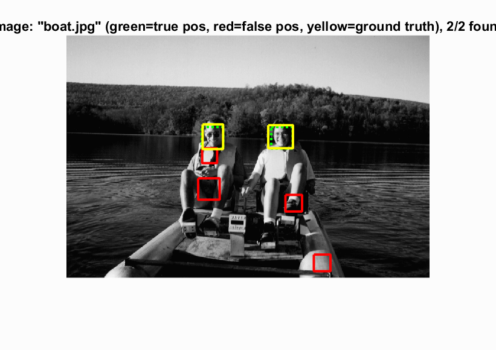

Project 5 / Face Detection with a Sliding Window
Objective
Modern cameras and photo organization tools have prominent face detection capabilities. For this project I am implementing a sliding window detector as mentioned in Dalal and Triggs 2005 for face detection. It focuses more on the representation rather than the learning and introduces the SIFT-like Histogram of Gradients (HoG) representation.The pipeline of the project looks like - traning positive and negative samples. Using a SVM as a classifier. Using the learnt classifier to classify the sliding windows as either a face or not. This is done at multiple scales of the image.
The steps involved in this project are:
- Extracting positive features from the training samples that contain faces. This is the positive training data.
- Extracting negative features from the training samples that do not contain faces. This is the negative training data.
- Training a linear support vector machine from the training samples with their corresponding labels. The positive samples are labelled as '1' whereas the negative samples are labelled as '-1'.
- Making predictions on the test samples using the trained SVM model by running a sliding window detector over the test images. The windows where the confidence value is above some threshold value is considered to be a positive bounding box where there is a higher likelihood of detecting a face.
Results
Section 1
|  |
Some good face detections made with the detector.
Section 2
Left to Right: The first figure represents the HoG features for a cell size of 6. The second figure is the avergae precision curve for the same cell size. The third plot represents the curve for the number of correct detections vs the false positives and is similar to Viola Jones.
Methodology
Getting positive features
The images provided for training are well structured and are already in the suitable format (36 X 36). HoG features are computed for these images using the vl_hog function. This gives us a 6 X 6 X 31 sized ouput which is reshaped to 1 X 1116 feature vectors.
Getting negative features
Here the images given are in the color scale. These have to be converted to grayscale images to match those given for the positive sample. Also, the sizes of the images are not consistent and hence we have to crop out random patches of the images from the set (non-faces) given to obtain the 36 X 36 patches. The HoG features for these random patches are computed and after flattening we obtain the 1 X 1116 feature vector. I have implemented Hard Mining to the negative features, to add the false positives detected as my negative features. Please look at the Graduate/Extra credit section for this.
Training a linear Support Vector Machine
Now that we have the positive and negative features we need a classifier to be trained using this data. The linear SVM is chosen for this purpose and the vl_svmtrain() is used to do this. The lambda value I have used in 0.0001 and the labels corresponding to the positive and negative features are 1 and -1 respectively.
Testing
The model trained so far is now tested on the test set of images. The concept of a sliding window is used to determine a potential detection. This is done using the trained SVM and by computing the HoG features for the patch of the sliding window. The confidence value(for the patch being a possible detection) is computed using w'X+b, where w and b are the parameters learnt from the trained SVM. If this confidence value computed exceeds a certain threshold value given then it is identified as a positive detection. All these positive detections are stored together after which a non-maximum suppresion is performed on them to remove the duplicates or the near-duplicates. These are then visualized. Perforing the above mentioned steps on different scales of the image helps increase the accuracy of the detector.
Additional Comment
The average precision value that I obtained for this base implementation is 82.1%. This score improved to around 85% on performing hard mining which I have included in the Graduate/Extra credit section.
Graduate/Extra Credit
Hard Mining
Hard mining is performed to artifically generate more negative training samples. For this purpose, we run the detector on the non faces images, collect all the false positives, that are definitely not faces since they come from the non faces set of images and append these to our negative training set. The HoG features are computed for these and are appended to the negative features. The run detector is again run on this. We observe that the performance changes by around 3% (base implementation --> base implementation+hard mining). Although this is not a huge difference, one observation is that it reduces the number of false positives detected and also makes predicitions is some cases.
Results
Section 1
Section 2
The comparison (the comparison in both sections above) between the first two images shows how there is a reduction in the number of false positives detected. The compariosn between the next two images shows how adding extra data can help in making a detection which was not showing up in the base implementation.
Section 3
From Left to Right: The precision curve and the curve matching the one in Viola Jones.
Decision Trees and Random Forests
Since we could try out with the different classifiers, I tried out Decision Trees (a non linear classifier). This did not perform well on the dataset, so I tried an ensemble classifier - Random Forests. The following are the observations I made:
- There are several detections made for an ensemble of trees for the same given threshold value used for the base implementation i.e. 0.80.
- It takes a really long time to execute.Probably because they are non linear classifiers.
- Parameters considered are: Maximum Number of splits : 1, Min number of leaves : 100, Min number of parents : 80, Number of weak learners used is : 3. These values have been chosen so as to reduce computation time and resources.
- Number of detections made is high but the number of bounding boxes obtained that are greater than the confidence values are low compared to the number of detections made.
- When I tried with Maximum Number of splits : 4 and Min number of leaves : 2, I got a very low precision value of 0.0011. So I came to the conclusion that maybe linear classifiers are better than the non-linear classifier for this dataset, or that the ensemble of decision trees is not a good classifier. Another experiment when I did not specify the number of leaves (it takes this to be the number of samples -1) and with all the other conditions being the same, the performance was even worse
- In the code files submitted : run_detector_tree is used to code the run detector for the tree. It has the predictions made for the learnt tree.
- Finally, many bounding boxes predicted and hence increasing the false positive ratio. : Precision:0.009
This is how the tree parameters look like: classreg.learning.classif. ResponseName: 'Y' CategoricalPredictors: [] ClassNames: [-1 1] ScoreTransform: 'none' NumObservations: 16851 NumTrained: 3 Method: 'AdaBoostM1' LearnerNames: {'Tree'} ReasonForTermination: 'Terminated normally after completing the requested number of training cycles.' FitInfo: [3x1 double] FitInfoDescription: {2x1 cell}
Although, when you observe the results you can see how the boundaries for the tree are being generated. Another interesting fact that was observed was that this classifier gives detections for some of the images which were not showing up earlier.
Results
Section 1


|
From Left to Right: For the second and the foruth images the way the decision tree is building the boundaries is clearly visible with the detection windows it is providing. The third image is interesting because both the faces do not show up in the base implementation but they atleast one shows up here. Similarly for the second image as well.
Section 2


|
From Left to Right: Figure 1 represents the ensemble for the first layer. We can observe the number of splits to be one here. The curves show that these values are not great for this dataset. However changing the parameter values may result in some good and interesting predictions.
Different descriptor used - SIFT and PHOW
Since we could try out with the different feature descriptors, I tried out the SIFT and the PHOW feature descriptors appended to the HoG features. The following are the observations I made:
- SIFT : The detector extracts from an image a number of frames (attributed regions) in a way which is consistent with (some) variations of the illumination, viewpoint and other viewing conditions. The descriptor associates to the regions a signature which identifies their appearance compactly and robustly.
- PHOW : The PHOW features are a variant of dense SIFT descriptors, extracted at multiple scales. These work well with color images but here we are considering just grayscale images.
- The number of samples computed were: all features: 16851 X 18268; w: 18268 X 1; b: -1
- The accuracy did not seem to change drastically with the addition of the different features. This shows that HoG represent the features quite well.
- Values obtained on the test set are: Initial classifier performance on train data: accuracy: 0.999; true positive rate: 0.398; false positive rate: 0.001; true negative rate: 0.600; false negative rate: 0.000;
- Takes too long to execute on the test set, since too many features (sift, phow) and hog being computed for each image patch.
HoG Implementation
I have tried to implement the hog feature extracter. Computing histograms for every 30 degree span. This is done for the given cell size of 6 and computed for each of these patches.
- On train data, the values I get are: Initial classifier performance on train data: accuracy: 0.985; true positive rate: 0.385; false positive rate: 0.002; true negative rate: 0.599; false negative rate: 0.013;
- The feature dimesions are: positive features: 6713 X 600; negative features: 10138 X 600;
- Since there are many loops that execute it takes a long time to compute on the test scenes so I could not generate the detection images for it.